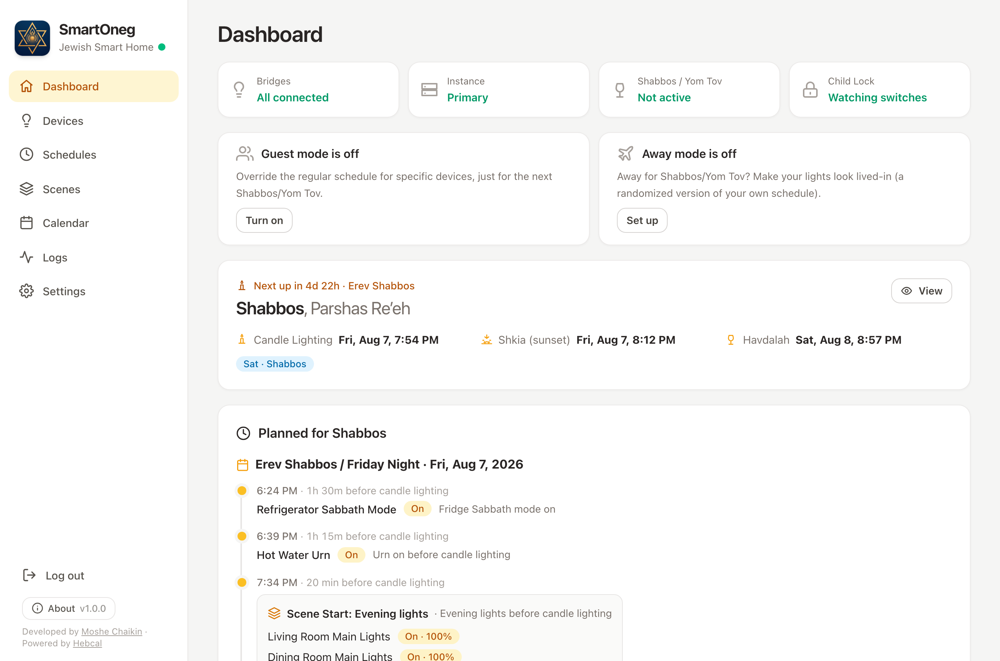
Keep using HomeKit, Home Assistant, or whatever you already run. SmartOneg is a dedicated layer for Shabbos and Yom Tov that runs alongside them, or on its own. While Shabbos/Yom Tov is active, your saved schedule is the single source of truth for the devices it manages.
Built for the realities of the Jewish calendar, down to the edge cases.
Build the schedule once, for Shabbos and for every Yom Tov (down to each day and its erev), and SmartOneg runs it indefinitely. It tracks candle lighting, shkia (sunset) and havdalah (and every zman) for your location, so there's nothing to reprogram before each Shabbos and Yom Tov.
Build a schedule the way you'd say it: start the Erev Shabbos scene 20 minutes before candle lighting, or dim the den at shkia. A rule can fire right at any zman computed for your location, or a set number of minutes before or after it (candle lighting, shkia, tzeis, alos, neitz, chatzos, plag hamincha, mincha gedola and ketana, sof zman shma and tefilla, havdalah), or at a plain fixed time like 6:00 PM. Either way, the exact clock time is recomputed for you every Shabbos and Yom Tov.
Summer Fridays and short winter afternoons are worlds apart, and so is an early Shabbos, when candle lighting can be well before shkia. Clamp a rule so it never fires before or after a set wall-clock time, add a don't-fire condition, or branch on the season: if shkia is after 7:00 PM, fire at a fixed time instead. The right thing happens whether Shabbos comes in at 4:15 or 8:30.
A regular Shabbos or Yom Tov isn't the only kind of day. Some years the calendar does something unusual, and you can give that its own schedule: the years Erev Pesach or Erev Shavuos lands on Shabbos, the Shabbos right after a Friday Yom Tov, Shabbos Chol Hamoed Pesach or Sukkos, Shabbos Chanukah, or the years a day of Yom Tov itself falls on Shabbos. SmartOneg picks the matching one automatically the years it applies, then falls back to your Regular schedule the rest of the time.
A scene is a named set of devices and levels, like “Erev Shabbos” or “Late night dim,” that any rule can trigger. Preview it live on your real lights before you rely on it, and extend one scene from another so a “Seder night” builds on your “Mealtime” base. Change a scene once and every rule (or base scene) that uses it follows automatically.
Whether you're building a schedule or just checking the one you saved, SmartOneg resolves it into a minute-by-minute timeline of real timestamps, every light change laid out in order for the very next Shabbos or a rare situation decades away. No guessing and no surprises after shkia.
Got a 2:00 mincha every Shabbos? Set a flash reminder to blink the dining room lights once or twice right at 2:00, a nudge in the middle of the seudah. Anchor it to a plain fixed time, or at, before, or after any zman.
On Shabbos and Yom Tov, lights may get changed by accident: a child presses a wall switch, or another automation in your home fires and flips one on. Turn on Child Lock for any device and SmartOneg keeps watch, so the moment a light lands in a state it shouldn't be in, it's set back to where your schedule wants it (after a short grace period), no matter what changed it.
It's not a lockout, and the light behaves normally the rest of the week. For the times a light genuinely needs to change, a deliberate escape hatch hands control to a non-Jewish helper: they press the switch a set number of times in a row, the light flashes twice to confirm the override has taken hold, and it then stays exactly where they leave it until havdalah.
A built-in calendar lays out every candle lighting, shkia and havdalah, computed on-device for your exact location, and behind it the app handles multi-day clusters, second days, and rare cases like a Yom Tov on Shabbos or one that starts motzei Shabbos.
From the calendar, click on any Shabbos or Yom Tov, years back or years ahead to open its full preview timeline and confirm your setup holds up for every scenario: a short winter Friday, a long summer Shabbos, Erev Pesach on Shabbos, or two days of Yom Tov running into Shabbos (three-day Yom Tov).
Open any Yom Tov to see it whole on one page: a mini-calendar of its days, the candle lighting, shkia and havdalah that bound it, and each day of the Yom Tov laid out with its own schedule. Click any day to jump into editing it, print a one-page zmanim sheet for the whole Yom Tov, or scroll the full timeline preview from erev to havdalah.
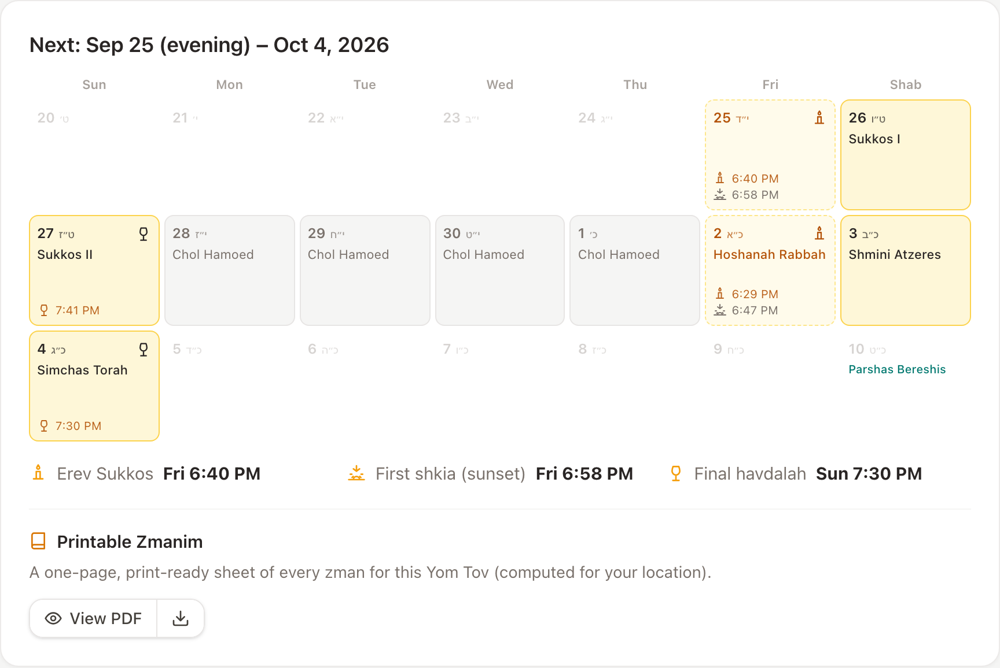
About a week before every Yom Tov (you choose how many days prior), SmartOneg emails you the full plan: candle lighting, shkia and havdalah for each part of Yom Tov, and the complete light schedule laid out device by device from erev to havdalah so you can look it over. Shorter alerts (like a bridge dropping offline or a backup instance taking over), can also reach you by ntfy or web push.
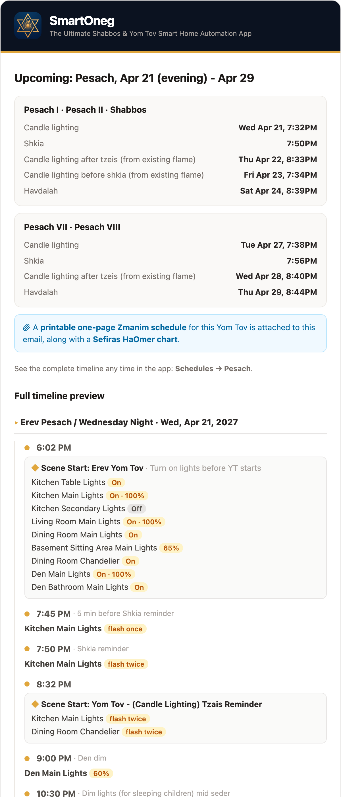
One click generates a clean, one-page zmanim sheet: a full-year Shabbos schedule, a per-Yom-Tov sheet, or a Sefiras HaOmer chart, all computed for your location (in English or Hebrew). Each Yom Tov's sheet is also attached to the summary email a week ahead, so it's already in your inbox, ready to print for Yom Tov.
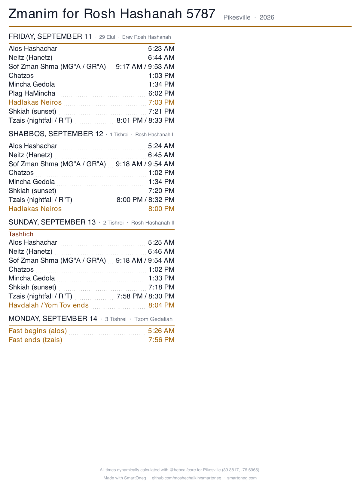
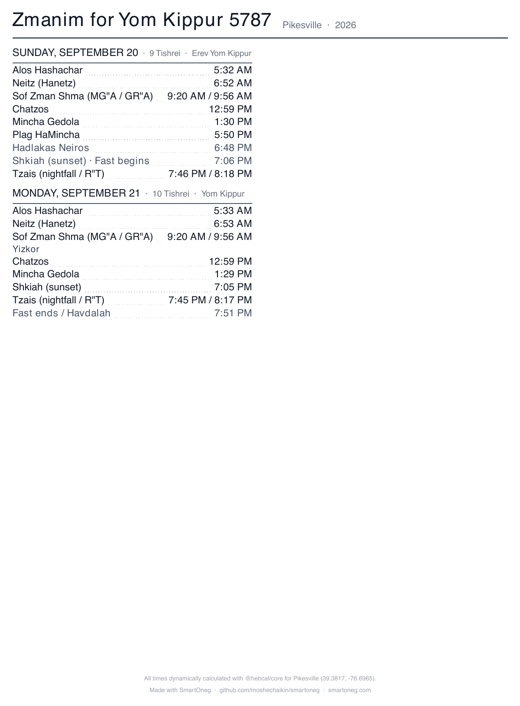
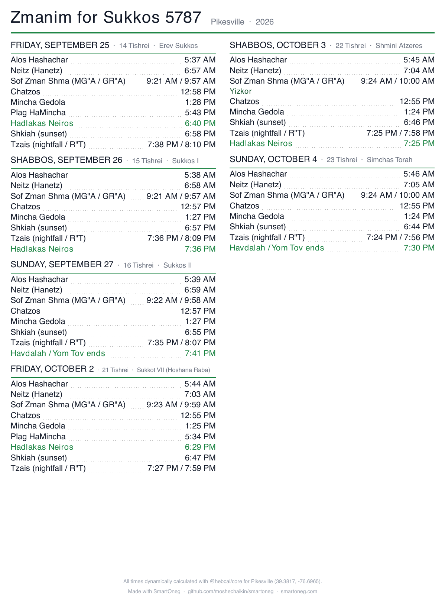
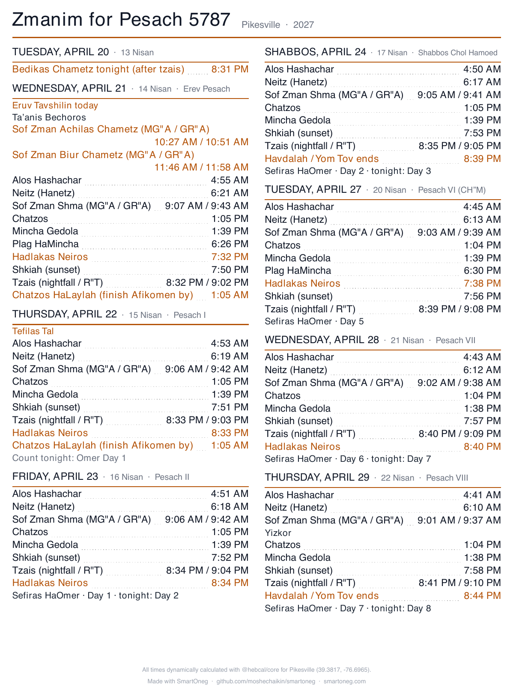
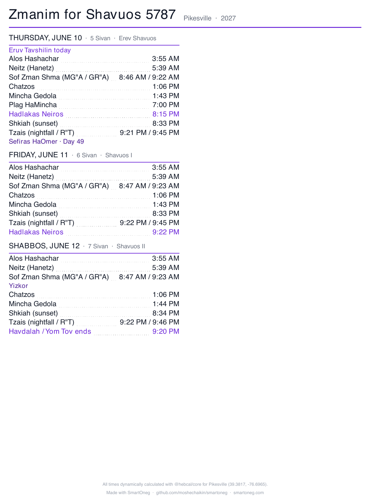
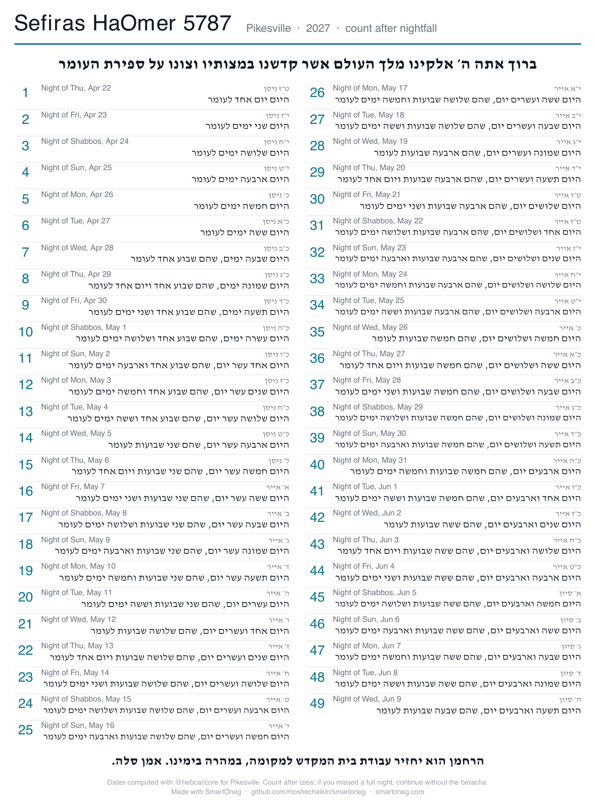
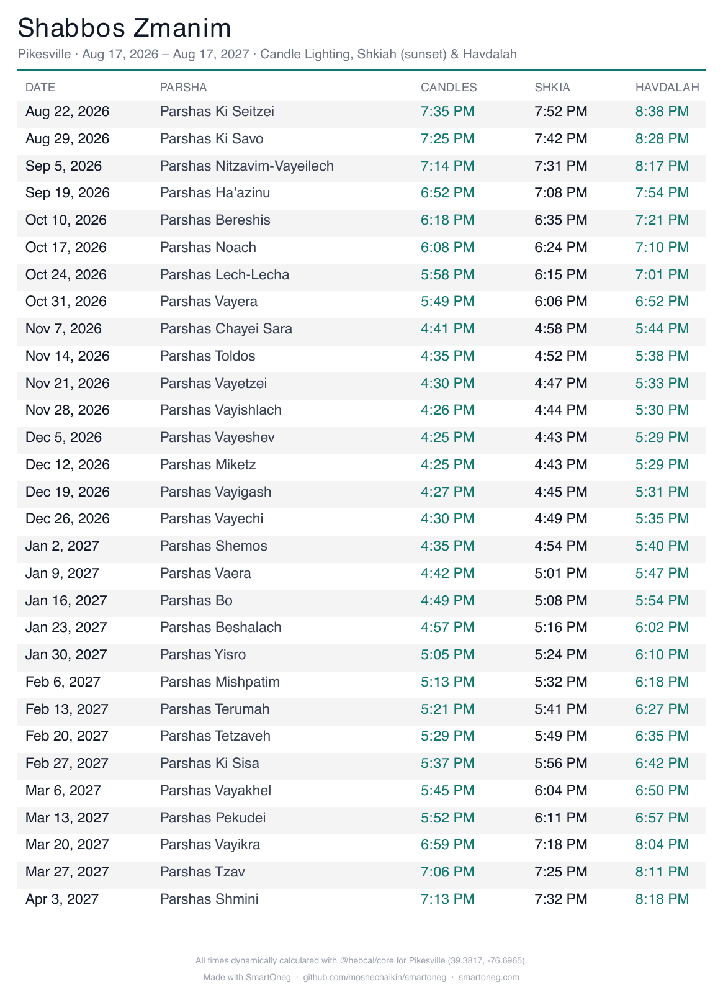
Hosting for one Shabbos? Override the schedule for specific devices without disturbing your regular setup. Traveling? Away mode runs a presence-simulated version of your own schedule, with jittered times and rooms varying night to night, so the house looks lived-in, and only ever during Shabbos and Yom Tov.
Override the regular schedule for specific devices, just for the next Shabbos/Yom Tov.
Away for Shabbos/Yom Tov? Make your lights look lived-in (a randomized version of your own schedule).
Run a second copy on a spare device as a hot backup: it mirrors your settings and takes over the lights on its own if the main instance goes down, then hands control back when it returns. Your whole configuration also snapshots to a single file every night, so nothing is ever one bad reboot away from lost.
Imports the chosen schedule's Erev rules into this Erev section. Nothing is saved until you press Save schedule.
Your whole configuration lives in one file. Export it any time, and the app also snapshots it automatically every night (the last 14 days are kept).
Your data in the ./data volume is never touched by an update.
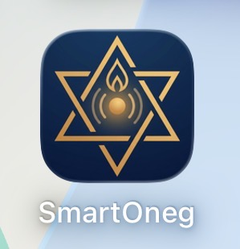
Native Lutron Caseta, plus bridges to just about everything else.
Connect through
Control any of these
Anything Home Assistant supports beyond these runs through an HA automation or script that SmartOneg can run, enable, or disable on your Shabbos and Yom Tov schedule. For example: disable a motion-triggered light sensor before candle lighting and re-enable it after havdalah.
Every integration is designed to run on your own LAN, with no cloud and no internet required while Shabbos or Yom Tov is in.
No accounts, no analytics, no tracking, and it never phones home. Everything stays in a folder on your own machine; nothing about you or your home is ever sent to the developer (or anywhere).
Self-hosted with Docker. Your data never leaves your network.
SmartOneg is the first home-automation platform built from the ground up for Shabbos and Yom Tov - not a generic automation tool with some zmanim and a Jewish calendar bolted on. Every detail, from the schedule logic to the safeguards around it, is designed around how Shabbos and Yom Tov actually work.
SmartOneg is free and open source. If it helps brighten your Shabbos and Yom Tov, you can buy me a coffee to support its development.